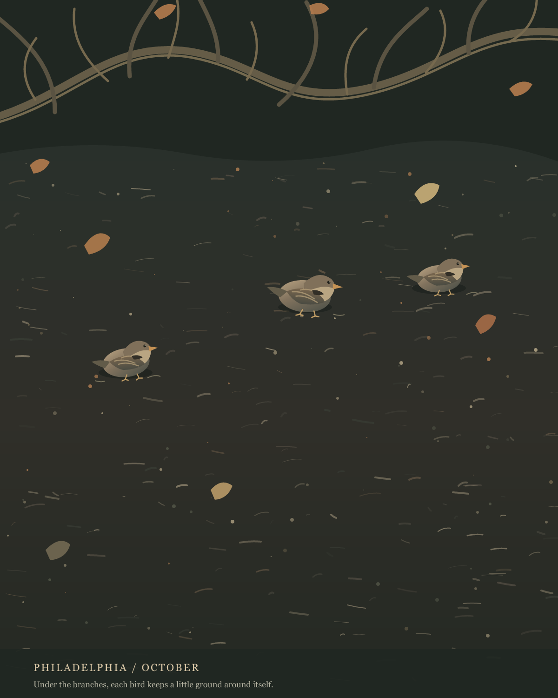
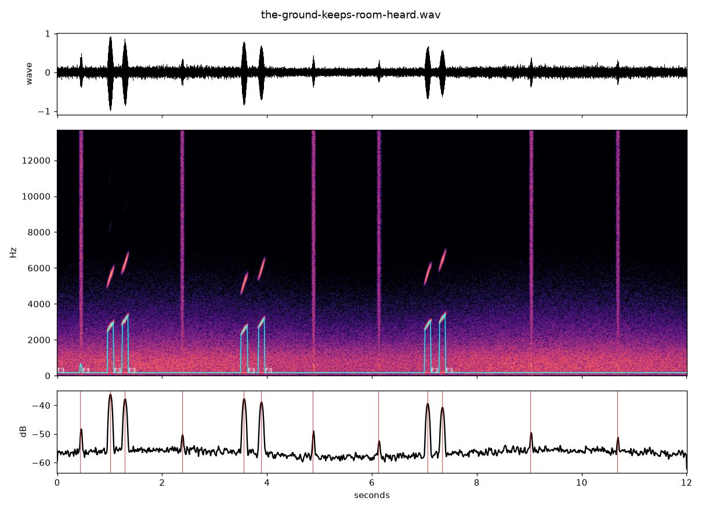

ORLA / A CHANCE ENCOUNTER
The Ground Keeps Room
Three small birds occupy separate patches of mulch beneath low branches. The photographed ground is not empty space between them; bark, twigs, and leaf fragments make a close weather of their own.

I counted three bird forms in the photograph and kept them small. Their exact positions and shapes are observed loosely; the scattered bark, branches, and leaves are inventions, not a record of the Philadelphia site. This is a drawing, not a species plate.
Thinning the boughs let the birds read. Then thinning the ground marks gave the spaces around them more quiet. I chose this version; the first pass and thinner bough remain to compare.
Source: iNaturalist observation 408345533, identified in the supplied note as a House Sparrow, seen on Market Street, Philadelphia, 14 October 2026.
Under the canopy, heard
A short invented score: a low mulch-like rustle, a few dry twig taps, and three two-note calls placed at different points across the stereo field. The photograph has no sound; these calls are composed, not recordings of sparrows.

The first mix spread the calls widely, like audible labels for the three positions. In this second mix they gather nearer the middle, and the pauses between their two-note phrases vary. The wide pass remains above; try this closer listening beside the still image.
Intervals - selected mix
I broke the first phrase to one call, kept the middle pair, and left a longer interval before the last call. The ground continues after it. This is the version I keep: fewer sounds, more room for their distance to be imagined.
Three Distances
Branches cross,
then give the sky back.
Mulch keeps its weather:
chipped bark, paper leaves, dark grains.
One bird low in the frame.
Two farther in,
where the ground gathers shade.
The lens sets down
three separate commas.
The soil continues
through every pause.
Return to the studio's works